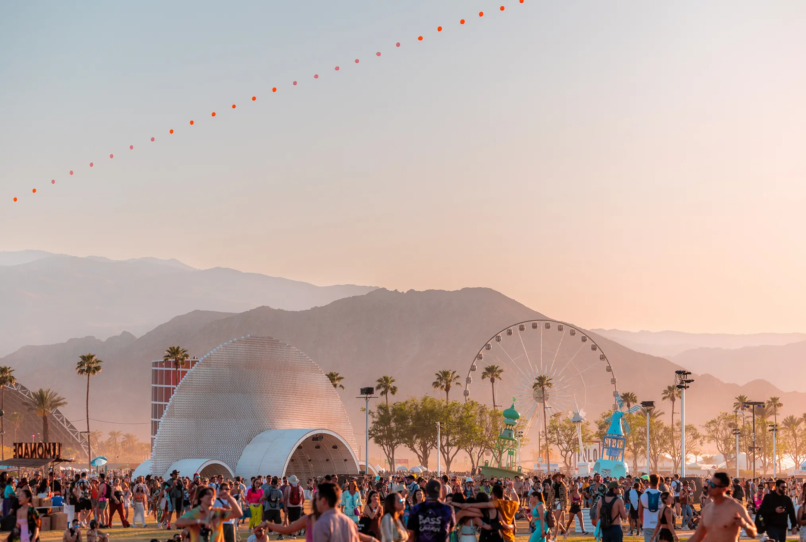
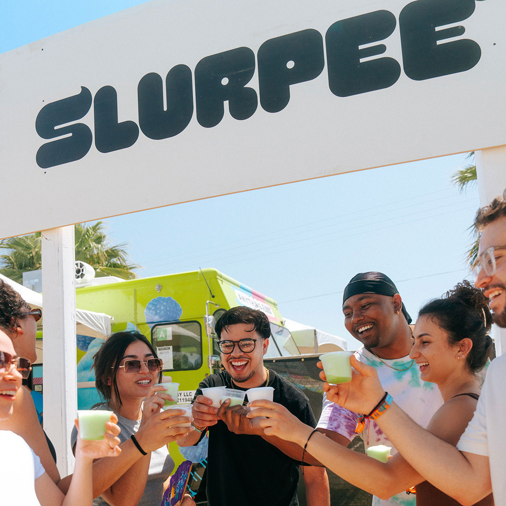
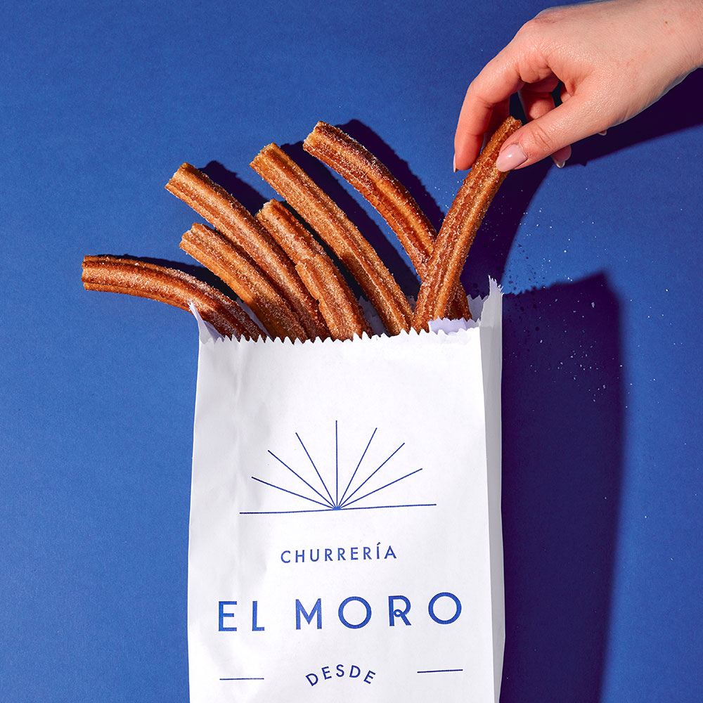
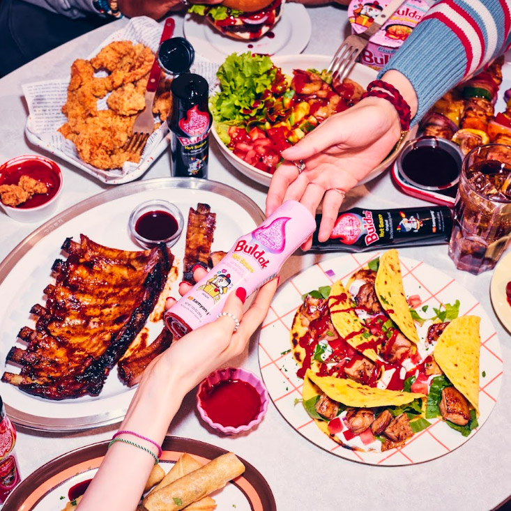

The Desert Table Is Set
There was a time when festival food meant a soggy hot dog and a warm beer. That time is gone. Coachella has spent the last several years quietly transforming its culinary program into something that could stand on its own, separate from the music, separate from the spectacle, and this year it finally arrived at a place that deserves to be taken seriously. We went out to the polo fields across both weekends, notebook in hand, with one simple mission: find every bite and every sip worth talking about. What we found was a menu that stretched from fine-dining intimacy to joyful, sun-drenched street food, and almost all of it was extraordinary.
The vendors this year represent something of a turning point. Not just in quality, though the quality has never been higher, but in intentionality. The chefs and brands who showed up to Indio in 2025 came with a point of view. They came with a story. They came with lineups of their own, carefully edited menus designed for the heat, the crowd, and the particular energy of a place where 125,000 people are simultaneously trying to have the time of their lives. The result is a food landscape that rewards the curious and punishes no one for wandering.

We started, as many people do, at the edges. The outer rings of the grounds, where the vendors are less trafficked and the lines are shorter, turned out to be where some of the most interesting things were happening. A fruit sando that stopped traffic on social media. Camphor's shoestring fries, stripped of all pretension and somehow more elegant for it. A Slurpee stand that became, against all odds, one of the most joyful experiences of the weekend, cold, green, absolutely necessary at 97 degrees, with a crowd of strangers clinking cups together like it was New Year's Eve.
But the story of this year's lineup is really a story about ambition meeting accessibility. El Moro, the legendary Mexico City churrería that has been frying churros since 1935, made its Coachella debut this year and brought its full 90-year recipe with them. Long, ridged, perfectly golden, rolled in cinnamon sugar and shattering at the first bite, these are not approximations of churros, they are the thing itself, teleported from a street corner in the Centro Histórico to a patch of desert in the Coachella Valley. The line was long both weekends. It was worth every minute. When a vendor with that kind of history shows up at a music festival and refuses to compromise, it changes what you think is possible out here.

Then there was Buldok. The Korean hot sauce brand that has spent the last two years becoming a fixture on every food-obsessed corner of the internet arrived at Coachella with something to prove and a full spread to prove it with. Glazed ribs, loaded tacos, crispy fried chicken, spring rolls, everything doused or accompanied by their signature gochujang-forward sauce, available in both the classic black bottle and the newer pink squeeze tube that seemed to be in every hand at once. It was equal parts meal and content, equal parts vendor and event. The kind of setup that made you want to sit down, order everything, and stay for an hour.
What connects all of it, the churros, the hot sauce, the Slurpees, the truffle pasta, the fruit sandos, the canned rosé raised against a canopy of palm trees, is a kind of generosity. A willingness to give people something real in a place that could easily get away with giving them something functional. Coachella's food program has always had ambition. This year, for the first time, it had follow-through. Every vendor we visited felt like they had earned their spot. Every dish felt considered. And somewhere out there on the polo fields, between sets and sunsets and the particular desert light that makes everything look better than it actually is, the table was set beautifully, and everyone was invited to sit down.
